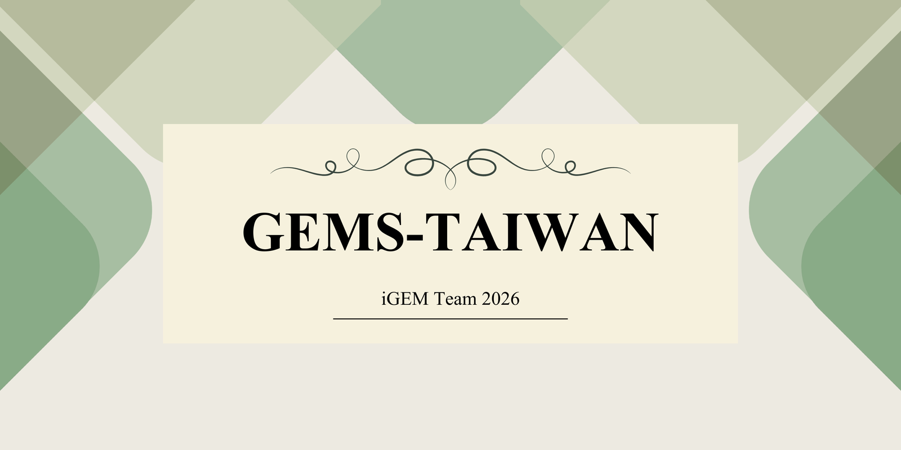
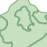
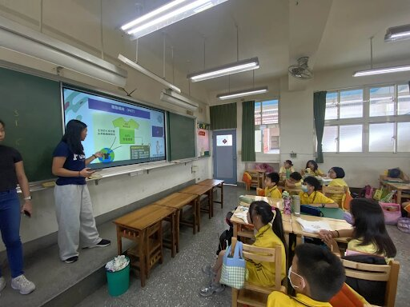
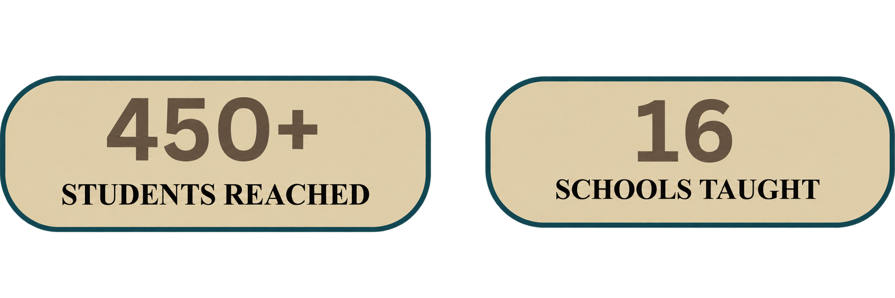
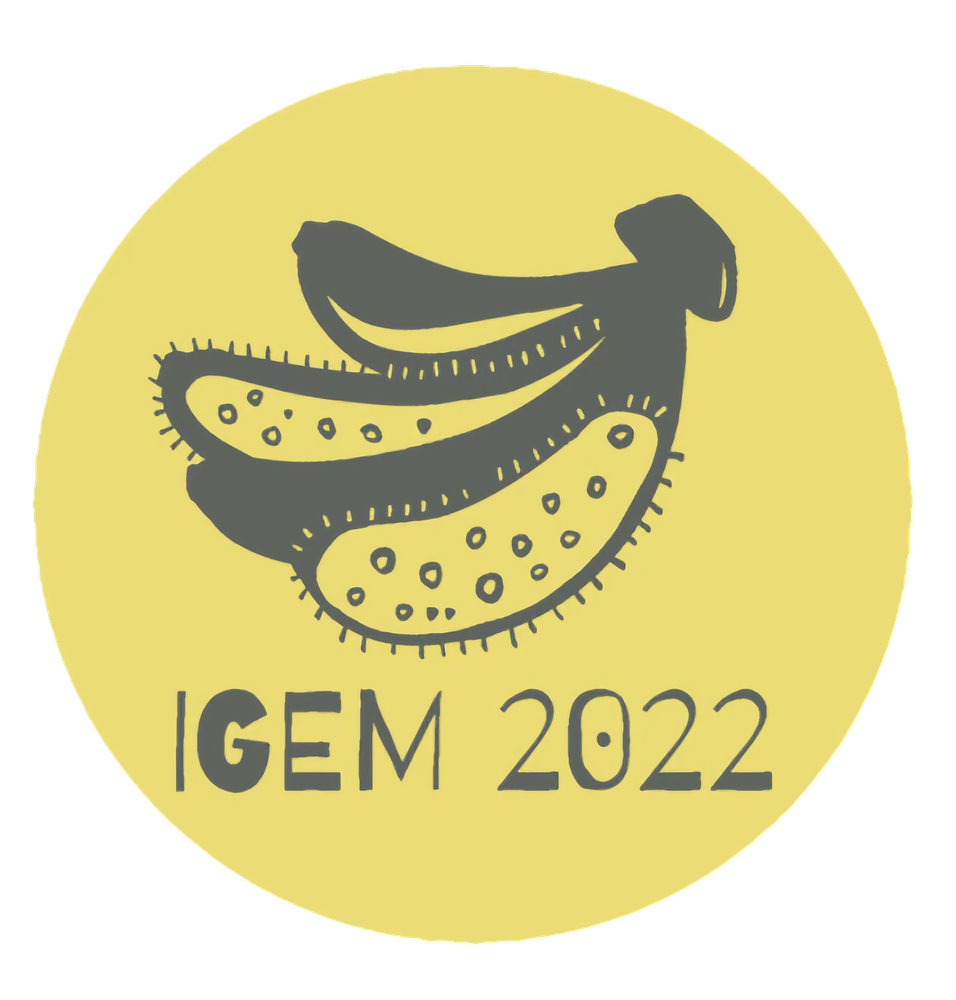
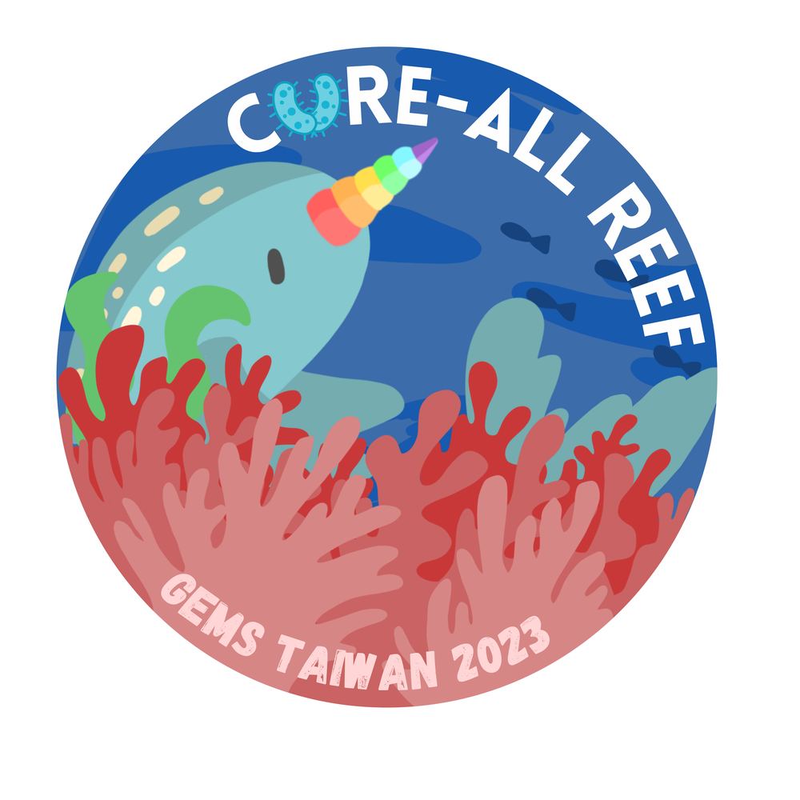
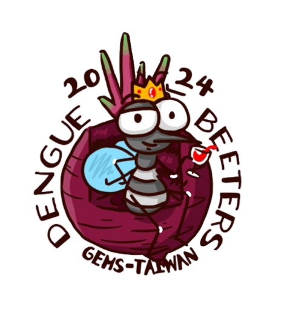
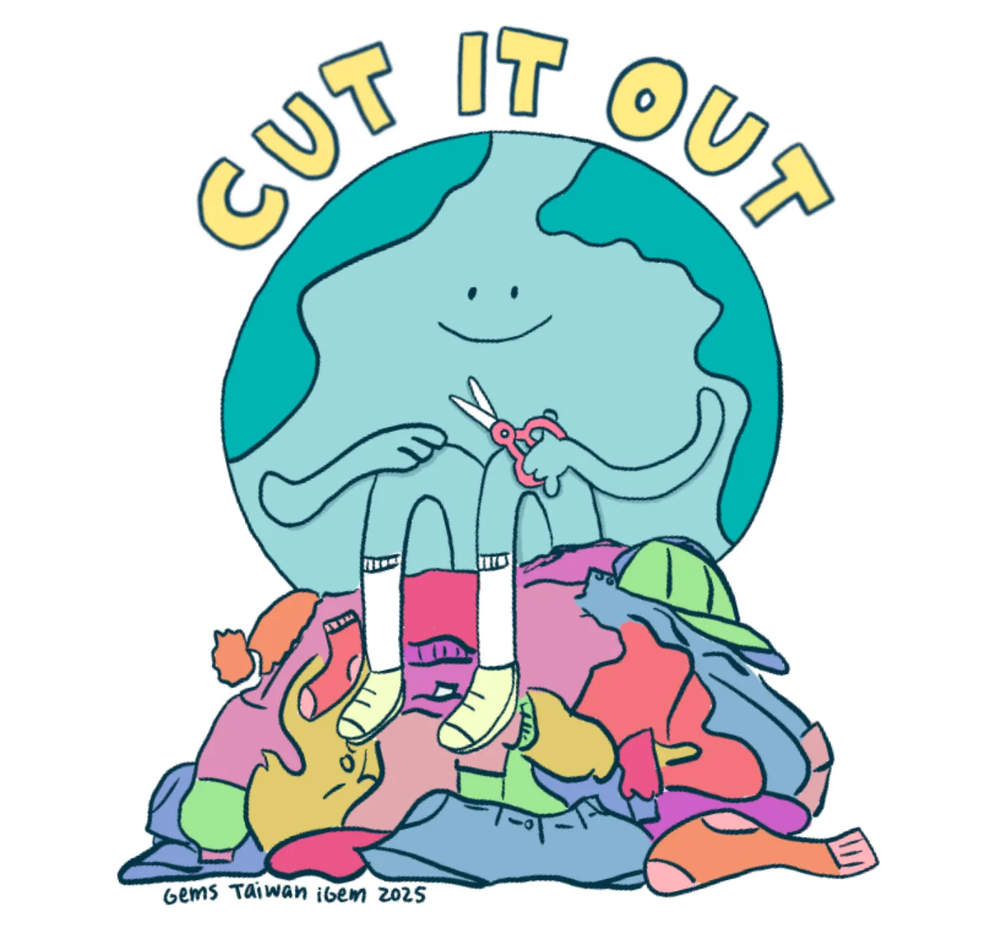
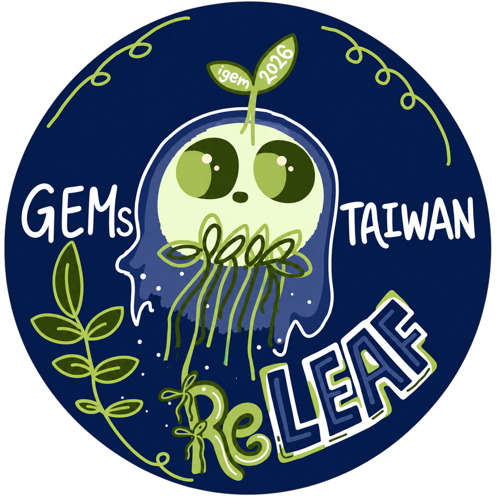

At GEMS-Taiwan, we are part of the iGEM program, an international synthetic biology competition where students design biology-based solutions to real-world problems. Synthetic biology is a field that combines biology and engineering to redesign living systems for useful purposes. What makes us unique is that we are directly involved in iGEM research, so we can share real, hands-on experiences from active projects.
We believe education is an important part of iGEM because it allows us to share our research and ideas and make complex ideas more accessible to students. Through our outreach, we introduce topics like synthetic biology in a simple and engaging way, even for those with no prior background. We also hope that through our education, students of different ages are able to ignite their interest in this area and inspire them to think critically about real-world problems.
We aim to:
- Integrate STEM learning with schools in an interactive way
- Encourage interest in scientific research
- Build teamwork, problem-solving, and communication skills
- Help students think about how science impacts society
Synthetic biology stands out as a field that actively designs solutions to real-world problems rather than simply seeking to understand them. It blends creativity with science and technology, distinguishing it from traditional biology by emphasizing innovation and application. This approach allows it to tackle pressing global challenges such as climate change, food security, and sustainable agriculture, making it especially relevant for the next generation of scientists and informed citizens. As a result, science education should move beyond rote memorization and instead prioritize problem-solving, critical thinking, and real-world application. It should also become more accessible and inclusive, while encouraging students to consider the broader societal and environmental impacts of scientific advancements.
Past Team Outreach Map
Click a point on the map to see what happened at each outreach location.

Luzhou Elementary School


2022 – 2025
Fusarium Won't
In 2022, GEMS‑Taiwan worked on a synthetic biology solution to help defend Cavendish banana plants from Fusarium wilt (a fungal disease threatening banana crops worldwide). Their approach focused on engineering a beneficial probiotic bacterium that could protect banana roots, potentially slowing down the spread of the disease.
Click Here to explore: https://2022.igem.wiki/gems-taiwan/index
Cure-All Reef
In 2023, the team’s project “Cure‑All Reef” aimed to improve coral reef resilience. Their synthetic biology solution involved engineering bacteria to better deliver probiotics to corals, helping protect them from bleaching and disease.
Click Here to explore: https://2023.igem.wiki/gems-taiwan/
Dengue Beeters
In 2024, the team worked on “Dengue Beeters,” a synthetic biology solution to combat dengue fever by disrupting the mosquito life cycle with innovative biological tools and designs. The project included a 3D‑printed ovi-trap and other novel strategies to control mosquito populations, which contributed to their success in the competition and winning the Grand Prize in the High School Division at the iGEM Jamboree.
Click Here to explore: https://2024.igem.wiki/gems-taiwan/
Textile Fighters
In 2025, GEMS‑Taiwan worked on solving the problem of textile and plastic waste by focusing on ways to break down materials that are normally very hard to recycle. The team engineered and tested different enzymes that can digest components of blended fabrics, developed methods to identify and preprocess different types of textiles, and created tools to help classify fabrics more easily.
Click Here to explore: https://2025.igem.wiki/gems-taiwan/
ReLeaf
In 2026, the GEMS-Taiwan team focused on developing a system that uses genetically modified bacteria to help crops respond to environmental stress. By combining engineered microbes with monitoring technology inside a controlled bioreactor, the project is designed to detect stressful conditions affecting plants, such as heat, drought, and high salinity, and release helpful compounds that support plant health and resilience. Through this approach, the team hopes to contribute to more sustainable and climate-adaptive agriculture.
